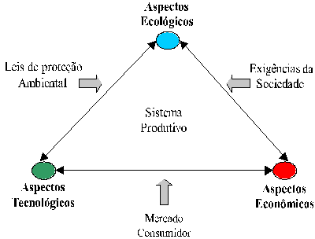

LMP>Research Guidelines>DUECO>Ecological Machining
INTRODUCTIONDuring past years the energy consumes, environment pollution and industrial waste has awakened special attention by the public authorities. Motivated by the ambient organs pressure, governors have been elaborating stricter laws in means to protect the environment and preserve energetic resources. Inside this context, LMP in 1996 started a new research line, the ecological
machining, aiming the development of studies to contribute with cutting
fluids use reduction and/or elimination on the machining processes, since
this products are responsible for a significant portion of the environment
aggression by the fabrication processes. OBJECTIVESThis research line aims to evaluate the real technological influences over the main machining processes with defined geometry (turning, drilling and milling) caused by the cutting fluids reduction and/or elimination in this operations. In a general way the evaluation concerns:
RESEARCH DEVELOPMENT The need to investigate this theme is growing as the technological
aspects turn to be essentials inside the company’s production strategy.
No doubt, dry machining is the best alternative to solve the problems caused
by cutting fluids, when ecological and economical advantages get together. In those cases, however, is possible to reduce cutting fluids
quantity reinforcing some fundamental characteristics to each process.
Cutting
fluids reduction as well elimination is the main goal of this study area.  Factors to be considered inside a productive process |
| Contact:
DUECO Rolf Bertrand Schroeter Prof. Dr. Eng. |
Last update 12.07.2006 |